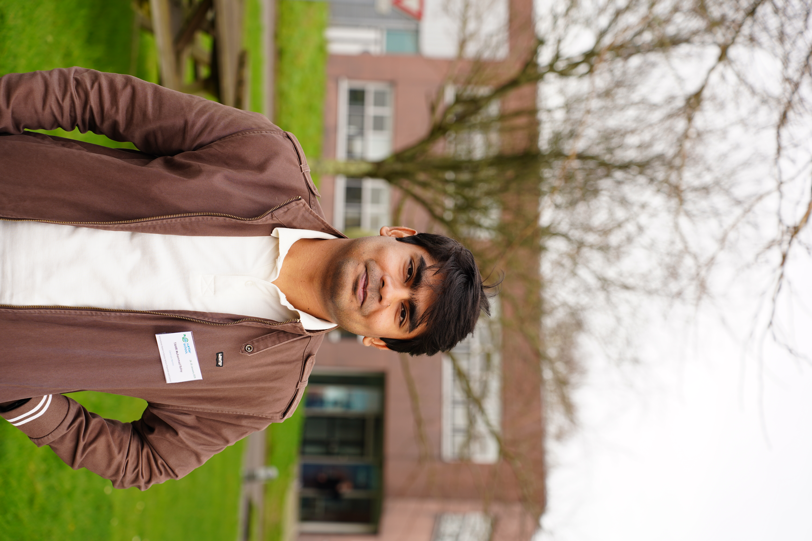
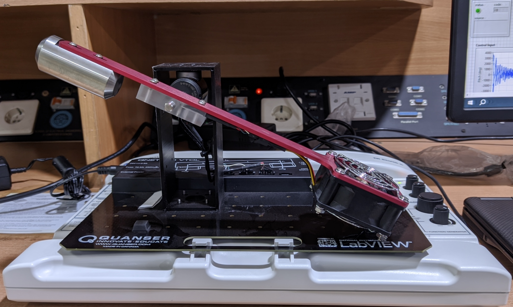
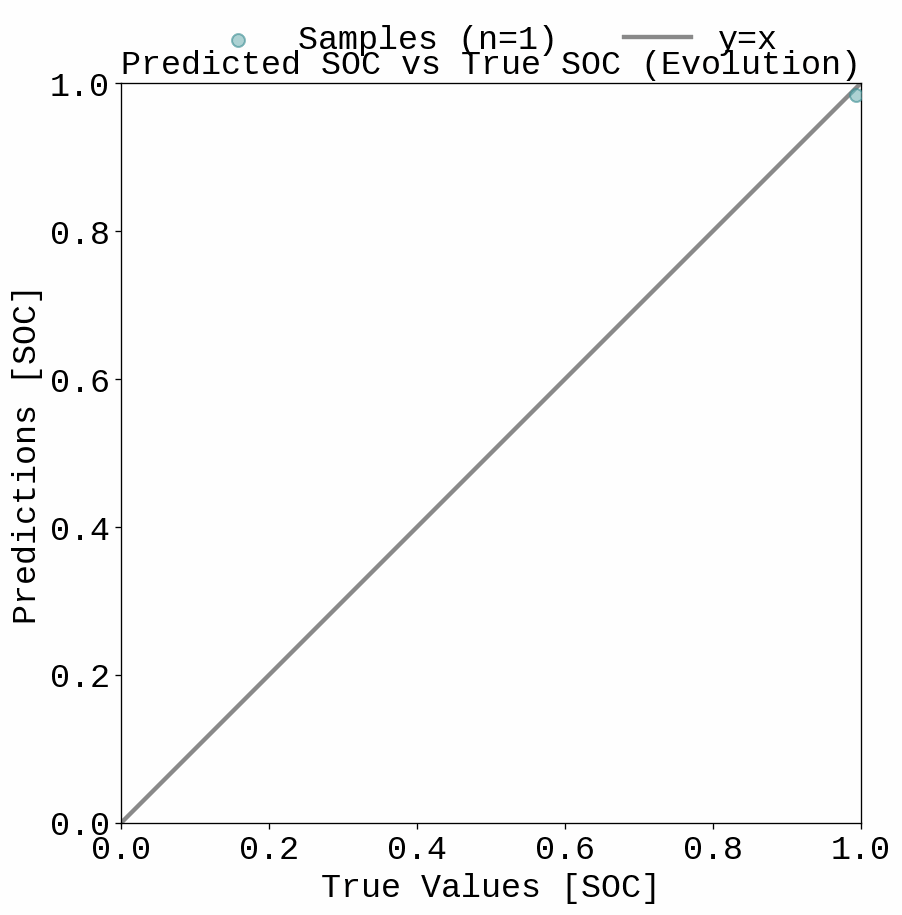
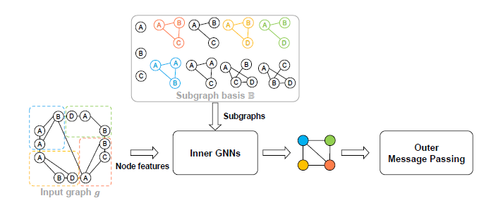
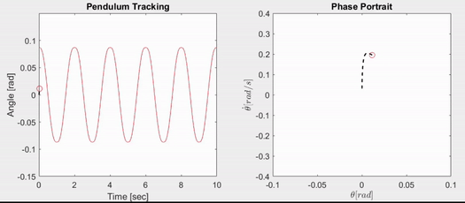
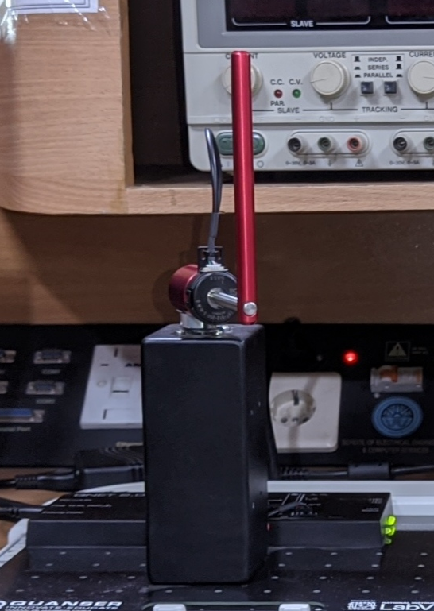
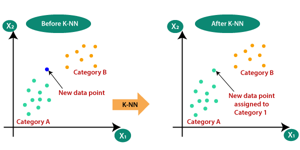
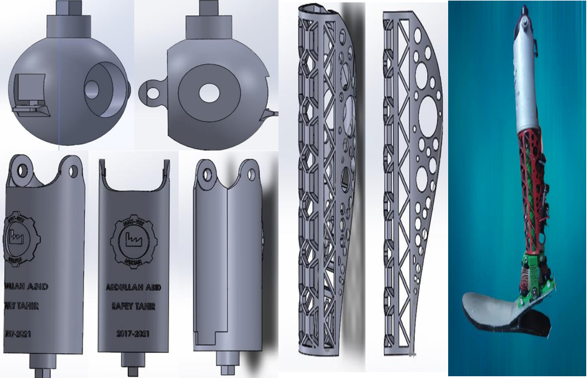

I'm a PhD student at Universitat Politècnica de Catalunya (UPC), based at the Institut de Robòtica i Informàtica Industrial (IRI) in Barcelona, working on motion planning and control of underactuated robots. I'm supervised by Prof. Josep Maria Porta Pleite and Prof. Jaume Franch Bullich.
Before that, I completed the first two semesters of the Erasmus Mundus Joint Master's in Electric Vehicle Propulsion and Control (E-PiCo+) at École Centrale de Nantes and the University of L'Aquila. I also hold a Master's in Electrical Engineering (Control Systems) from SEECS, NUST, Pakistan, where I worked with Prof. Usman Ali, and a bachelor's degree in Electrical Engineering from MNS-UET.

May 2026Our paper on stable limit cycle generation in underactuated systems was published at ACC 2026.
2026I received the ACC 2026 Student Travel Grant.
My research interests lie at the intersection of robotics, reinforcement learning and control. Aiming to enhance the agility, efficiency and robustness of robotic and autonomous systems, I develop novel methods that unify perception, planning and control in a transparent and understandable manner.
If you find my work appealing or would like to connect, please get in touch. I am always looking for new collaborations, especially in motion planning and control of underactuated robots.
|
Muhammad Rafey Tahir et al. IEEE American Control Conference (ACC) 2026 paper |
.gif) |
Design and implementation of inverse kinematics algorithms for trajectory optimization and path planning, enhancing robotic precision and efficiency in dynamic environments. Dexter 6 Pro |
 |
Produces periodic maneuvers on a VTOL system using a model-free controller. video |
 |
Deep learning-based SOC and SOH estimation for lithium-ion batteries, with embedded deployment considerations. code |
 |
Analog circuit automation using graph neural networks and reinforcement learning. code |
 |
Generates periodic reference trajectories for robot manipulators, which can be used to produce stable limit cycles. code |
 |
Controls a rotary inverted pendulum using a model-free robust adaptive controller. code / video |
 |
Implements four algorithms from scratch: K-Nearest Neighbors, Decision Tree, Support Vector Machine and Logistic Regression. code |
 |
M. Rafey Tahir, Abdullah Bachelor's Thesis, 2021 thesis |
During my master's and undergraduate studies I worked as a teaching assistant for the following courses:
- MATH-816: Applied Linear Algebra 1, an introductory theoretical course offered over multiple semesters (Fall 23, NUST, MS Electrical Engineering, 50 students).
- CSC-341: Introduction to Computing, an introductory course in BSc Electrical Engineering at MNS-UET.
- EEE-562: Linear Control Systems, a core course in BSc Electrical Engineering at MNS-UET.
I very much enjoy teaching and have received great feedback from students. Highlights from my studies:
- Erasmus Mundus Scholarship for the Joint Master Degree on Electric Vehicle Propulsion and Control
- ACC 2026 Student Travel Grant
- Studentship for the Model Predictive Control (MPC) course by Prof. Alberto Bemporad, IMT School for Advanced Studies Lucca
- Dean's Honour Roll: Fall 2019, Spring 2020, Fall 2020, Spring 2021
- PepsiCo Foundation ExCEL Awards Program
- Prime Minister's Youth Laptop Scheme, Phase III
If you are interested in reaching out, please send me an email.